フルーツキャッチ
かごを持って、落ちてくるおいしいフルーツをキャッチ。でこぼこで、しかめっつらのフルーツはくさっています。それはよけてね。
59 one-minute party games. One stick, one button, no reading. Free in your browser.
CBC Radio, Daybreak South で紹介されました
ナイショだけど…次はNintendo Switch™を夢見ています。
スキャンしてスマートフォンやタブレットで遊べます。アプリのように全画面で遊べます。
ゲームを開いてホーム画面に追加すると、全画面で遊べます。
アプリのように全画面で遊べます。
今すぐ遊ぶをタップし、共有からホーム画面に追加を選びます。
アプリのように全画面で遊べます。
今すぐ遊ぶをタップし、⋮からホーム画面に追加またはアプリをインストールを選びます。
同じ島に、もっとなかまを。
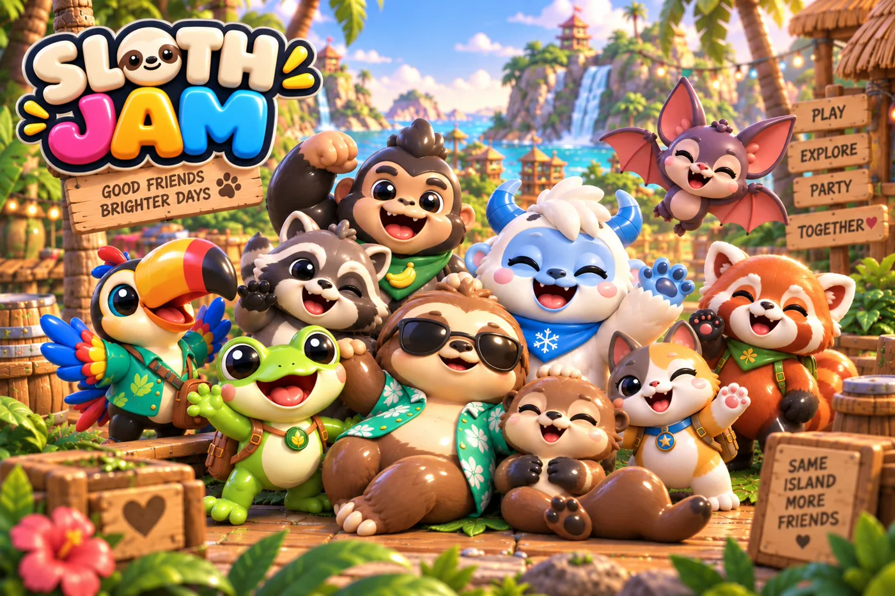
町のはずれには、カワウソからイエティまで、10種類のどうぶつたちが暮らしています。近づくと手をふってくれて、エモートにこたえたりおしゃべりしたり。夜になると、まるくなって眠ります。
どのゲームも1分間。
1試合は3ラウンドで、最後のラウンドは得点が2倍。最下位のプレイヤーが決勝のゲームを選べます。さらに「フルーツあらし」や「ゴールド2倍」など49種類のパーティーアレンジが、1ラウンドだけゲームを変化させます。コンピューターのプレイヤーはやさしいきょうだいのように遊びます。テストを重ねて調整し、はじめての人でも4ラウンドに1回くらいは勝てるようにしています。
かごを持って、落ちてくるおいしいフルーツをキャッチ。でこぼこで、しかめっつらのフルーツはくさっています。それはよけてね。
おにになった人は王冠をかぶります。走って、よけて、だんだん小さくなるリングの中にいましょう。
穴は9つ、スポンジのハンマーは1本。コンボをつなげて、金色のもぐらをねらい、ハリネズミには気をつけて。
このゲームに負けはありません。時間内にみんなで力を合わせてすべてのランタンをともし、星をわけあいましょう。
ゆらゆらゆれるハンモックの輪、下ははるか遠く。最後まで残ったナマケモノの勝ちです。
トロッコに乗ってクリスタルの洞窟を進みます。カーブでは体をかたむけ、すき間はジャンプ、回転してトリックポイントをゲット。
ほかにも「おやつあつめ」「うさぎあつめ」「水切りあそび」「ぼうしとばし」「ココナッツよけ」「ツルひき」「池ホッケー」など、さらに51種類。
ゆきぼうし山のこおった池で、2チームが対戦。それぞれのゴールにはキーパーがいます。タップでシュート、長押しで強力なスラップショット。
砂の道をココナッツがころがってきます。大きいのは横によけて、小さいのはジャンプでとびこえましょう。
ほかのナマケモノのぼうしをねらい、自分のぼうしは頭にのせたままキープ。とばされたぼうしは、すぐにもどってきます。
氷の上の星を順番にすべって、形をえがきましょう。
雪のリングのまん中で、雪だるまに雪玉を投げましょう。
のんびり遊べるタップパズル。ふせられた12枚のカードから、6つのペアを見つけましょう。
パーティーを2チームに分けて、得点をいっしょに競うラウンドもあります。
ほとんどのゲームには、1ラウンドだけルールが変わるアレンジがあります。フルーツのあらしや、金色のもぐらがいつもの2倍出てくるアレンジなど。
どのゲームも町に看板があるので、好きなゲームだけを遊ぶこともできます。
コースは5つ。みんなでレース。
全員参加のカートレース。行きたい方向にスティックをたおし、カーブでボタンを長押しするとドリフト。アイテムボックスを通りぬけると、とうがらし、バナナ、こうら、追いかけ玉、スターのどれかがもらえます。ゲート、周回、コイン、ゴールがすべて得点になるので、どのレーサーもポイントを持って帰れます。
道が広くてやさしい、町をぐるっと回るコース。3周で、はじめての練習にぴったり。
浜辺ぞいのS字カーブ。道の上にはヤシの木や潮だまりがあります。
ヘアピンカーブがあって、ずっとつるつるの氷。雪だるまに気をつけて。
ようがんの上の細い道。急なカーブがあって、さくはありません。落ちたカートは道にもどしてもらえます。
雲の上の大きなカーブと、ずっと続くダッシュパネル。ドリフトするならこのコース。
カーブでボタンを長押しすると、火花が青、オレンジ、ピンクと変わります。はなすと一気に前へ。
うしろを走るカートほどいいアイテムが出るので、ひとりだけ取り残されることはありません。
町のゴーカート乗り場のうしろに、コースごとの旗があります。好きなコースだけを走ることもできます。
島はできあがり、今も広がっています。完成まで、力を貸してください。
今日ファウンダーパックを購入すると、そのお金は、実際のご家族とのプレイテスト、Androidアプリ、「大ジャムまつり」の新しい神殿やサイドクエスト、そしてアートとサウンドの仕上げに使われます。特典はすべてデジタルの見た目アイテムで、アルバムにファウンダーパックが必要なものはありません。アーリーアクセスの間、ゲームは基本プレイ無料のままです。
ナマケモノにファウンダーバッジ、島のファウンダーハウス、そしてクレジットにお礼のお名前。
$5で購入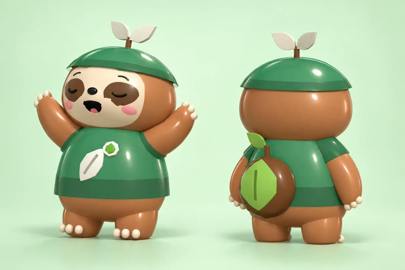
$15島なかまの特典すべてに加えて、ファウンダー衣装（ぼうし、トップス、リュック）、そしてAndroidアプリが完成したときの先行アクセス。
$15で購入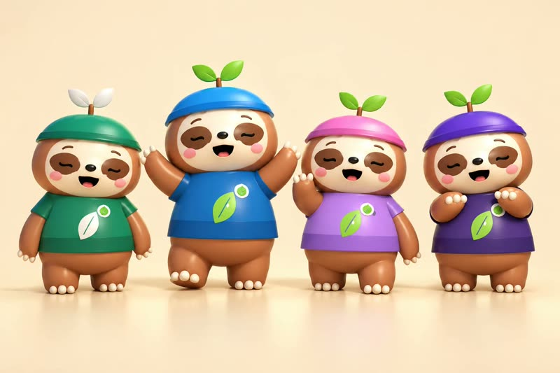
$30ファウンダーの特典すべてに加えて、家族のプロフィールごとに1つずつ、4種類のファウンダーカラー。さらに次のパーティーゲームを決める投票権。
$30で購入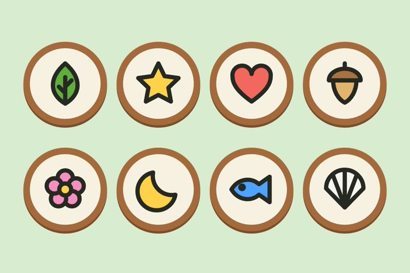
$75ファミリーファウンダーの特典すべてに加えて、島のベンチにプレートを設置。アイコンは8種類から選べます。
$75で購入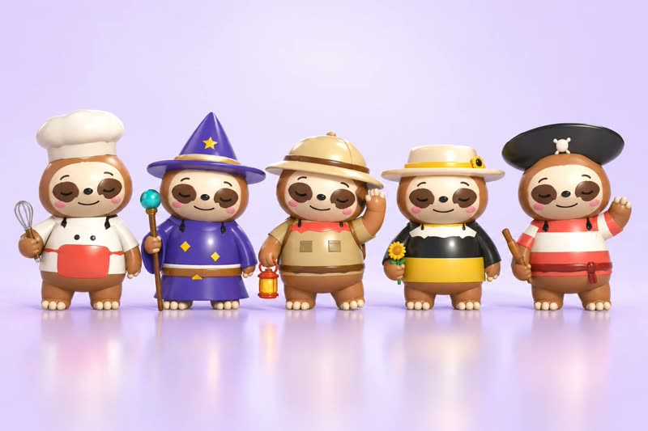
$250ナマケモノ一家の親せきを1匹、あなたといっしょにデザインし、すべてのプレイヤーのアルバムに追加します。島のパトロンの特典もすべてついてきます。限定20名。
$250で購入価格は米ドルです。お支払い画面では、Stripeがお住まいの国の通貨で金額を表示します。
価格はお住まいの国の通貨で表示しています。お支払い時にもこの金額になります。
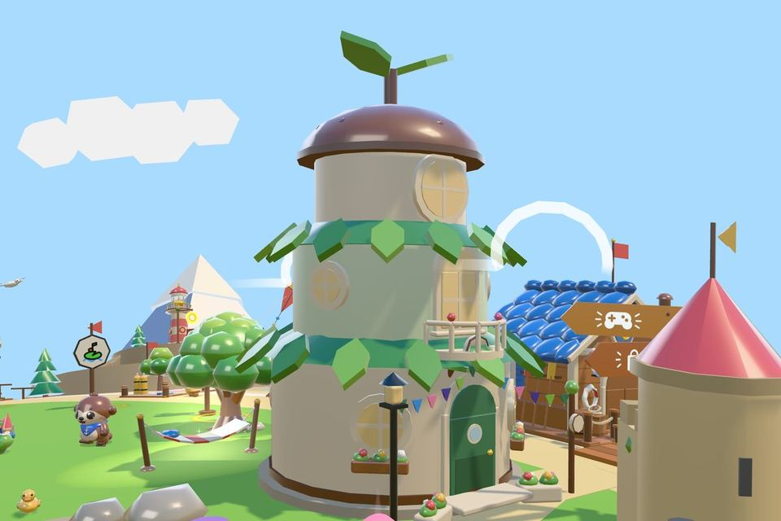
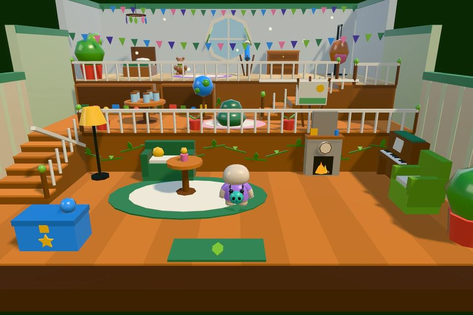
港のそばに、たねから育った、ファウンダーだけのおうち。3階まで上がってみましょう。パチパチ燃える暖炉のある居間、階段の上にはたねの図書室、そしてまるい窓の下に望遠鏡のある、くつろぎの屋根裏部屋。すべてのファウンダーパックについてきて、ファウンダーコードを使うとすぐにゲームの中でオープンします。
お支払いはStripeが処理します。ファウンダーコードは、購入から1〜2分後にメールで届きます。ゲームで保護者向けメニューを開き、Redeem a backer code（支援者コードを使う）を選んで、コードを貼りつけてください。気が変わった場合は、30日以内に領収書メールに返信していただければ、全額返金いたします。
ファウンダーパックは、まもなくこちらで発売します。
Already playing? Invite friends: when they join or buy a pack through your link, your family gets gifts in the game, up to a free founder upgrade.
Share the island, earn gifts.
Every grown-up account has a family invite link. When friends join or buy a founder pack through it, your family gets gifts in the game, on every device.
A heart Friend pin for both families, plus coins: 300 for them, 250 for you, for up to 5 friends.
The Ambassador outfit: a beret, and a jacket with a sash and a heart rosette.
A free upgrade to the next founder pack, added to your account by itself.
Island Patron: the Founder House, every outfit color and the bench plaque.
海の向こうの雪山。
北の浜辺にある望遠鏡をのぞくと、雪山へ行けます。リフトで上まで登ったら、スノーボードやスキー、そりで下りてきましょう。
この山には冬のゲームが7つ。「パウダーラン」「スキースラローム」「スキージャンプ」「ゆきがっせん」「つるつるストーン」「スタースケート」「池ホッケー」。
望遠鏡の向こうのポニーの谷。
望遠鏡をクローバーの谷に向けると、川や橋、洞窟のある緑の谷へ行けます。馬つなぎ場でポニーに乗って出発。スティックを少したおすと歩き、いっぱいにたおすとギャロップ。ジャンプボタンで丸太やさくをとびこえます。谷のあちこちに、金のていてつが12個かくれています。
道を歩いたり、トロットしたり、ギャロップしたり。ポニーがけがをすることはありません。木やがけ、深い水の前では、そっと止まります。
試合場をむかい合って走り、ちょうどいいタイミングでやりをかまえましょう。だれも落ちません。
障害とびのコースをならんでギャロップ。さくが来たら、ひとつずつジャンプ。
自分のレーンの上にあるリングに、やりの先を通しましょう。リングはみんなまったく同じです。
ことばのない物語。
大きな風がおまつりをふきとばしてしまいました。旗はたおれ、噴水はかれて、橋の板もなくなっています。ナマケモノ一家といっしょに町を元どおりにして、町が少しずつ変わっていくのを見守りましょう。
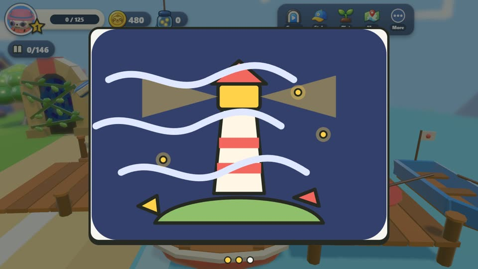
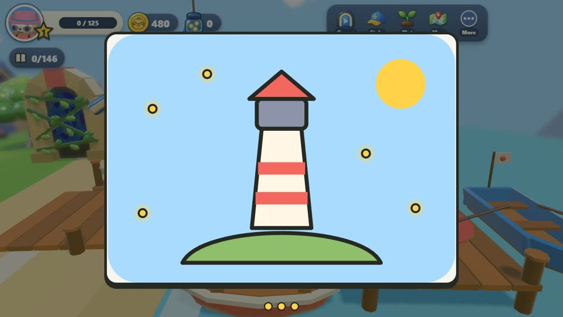
絵カードとふきだしだけで、物語のすべてを伝えます。文字を読む必要はありません。
スコアを求めるクエストはありません。ラウンドを最後まで遊べば、それで十分です。
全9章をゲームで遊べます。グランブルたちに出会い、おもちゃの剣やランタンなどの道具を手に入れて、3つの風のチャイムを島に持ち帰りましょう。物語の本から、好きな場面をもう一度遊ぶこともできます。
島はどんどん広がっています。
自分のペースで探検できる場所。ナマケモノがけがをするようなものは何もありません。
桟橋から海へとびこんで、海の底のサンゴ礁へ。8匹の海のなかまに会って、大きな貝から6つの真珠を見つけ、沈没船の宝箱を開けましょう。
浜辺のおもちゃのロケットに乗りこんで、発射！ガラスのヘルメットをかぶってクレーターをぴょんぴょん。空には地球がうかんでいます。
島まるごと大きなスケートパーク。スケートボード、キックボード、自転車、ローラースケートから選んで、ハーフパイプやボウルでトリックを決めましょう。
緑あふれる夏の山に、自転車コースが4つ。のんびりした草原の道からジャンプコースまで。タイムを計りたい人には、どのコースにも時計があります。
西の芝生にあるスカイリフトに乗ると、雲の上の島へのぼれます。風のふきだしに乗ったり、葉っぱをひらいて10個のリングをくぐったり、金の羽根を10枚さがしたり。はしから落ちても、ふわふわもどってきます。
屋根に大きなシルクハット、まわりには飛行船がとぶスチームパンクのお店。島の発明家ハグルマ博士がお店番をしていて、パーティーゲームの中にはこの部屋で遊ぶものもあります。
浜辺にある、やさしいダンジョン。たいまつにカギ、木箱、そして起こしてあげたい大きなカメ。
町のあちこちにある、4つの小さななぞときの部屋。どれもスティックだけで解けて、失敗することはありません。
光るリングにむかって、ツルでスイングしてのぼります。ねらいをつける必要はありません。がけの上や木のてっぺんまで行けます。
8つの立ち石を目ざめさせると、島のあちこちへワープできます。やさしいフクロウについていけば、まだ見つけていない場所へ。
おうちにお店、おもちゃもいっぱい。
芝生の上に自分だけのおうち。26種類の家具を置いたり、かべの色をぬったりできます。レベルとコインで、もっと大きなお部屋にできます。
作業台で物を作って、自分のお店で売りましょう。値札は自分で決められて、だれも高く売りつけることはできません。
乗りこんで、町をぐるっと回る道をドライブ。道の上にうかぶ8つの星をぜんぶ取って、1周しましょう。
島全体を見わたす空へふわり。家族のナマケモノたちもかけよって、いっしょに乗りこみます。
育てたものでサラダやクッキー、パイ、シチューを作りましょう。どれも少しだけパワーアップ。ジャンプが高くなったり、足が速くなったり、ナマケモノが大きくなったり。
桟橋のボートに帆がつきました。たるをわってたねを集めたり、沈んだ宝箱を引き上げたりしましょう。
生きもの、親せき、名所を撮って、写真集をうめていきましょう。ページごとにごほうびがあります。
ベース、コンガ、ウクレレ、トランペットを演奏できます。バンドが4つの小さな曲を教えてくれます。雨をふらせたり、昼を夜に変えたり、花をさかせたり、ウサギを呼んだりする曲です。
ホタルやチョウをつかまえたり、池の水をすくったり、おやつをとっておいたりできます。
ピンクのハートのかけら12個が、町のあちこちにかくれていたり、なかまからもらえたりします。4つ集めるとハートになって、ジャンプが高くなるなどの小さな特典があります。
草むらを走りぬけたり、きのみの木をゆすったりすると、コインやたね、チョウなど、ちょっとしたおたのしみが出てきます。
島のDJ。昼は野外ステージのそばでのんびりして、夜はダンスクラブでDJをします。
どのナマケモノにも、2つの絵を組み合わせた名前がつきます。文字の入力はありません。
4ページに27のやることがあり、それぞれ星を3つまでもらえます。ページを完成させると、そこでしか手に入らない衣装アイテムがもらえます。
着せかえて、ごっこあそび。遊んで衣装をゲット。
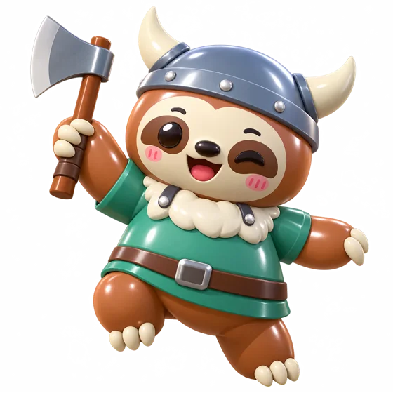
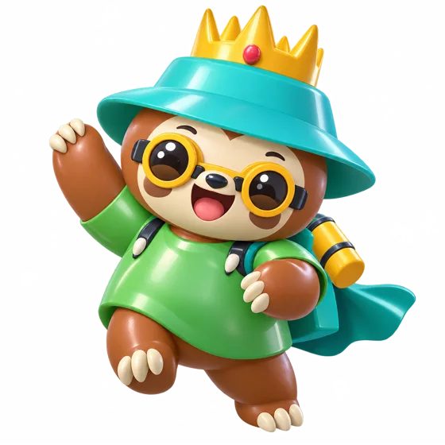
16種類のテーマ衣装に加えて、ぼうし、トップス、リュック、アクセサリーがそろうクローゼット。家族のプロフィールでクローゼットを共有するので、どの衣装もみんなで使えます。
コック、海賊、魔法使いの衣装をまるごと着ると、町のみんなもごっこあそびにつきあってくれます。役は16種類、スコアも負けもありません。
ブティックの中のおさいほうコーナー。形、そで、もよう、2つの色、リボンを選ぶと、ナマケモノの上でドレスができあがっていきます。チェックマークをおすと、そのドレスはあなたのもの。クローゼットにも入ります。
ゲームのあいまは、ゆっくりと。
魚や、アルバムにのせるおもしろいハズレを釣りましょう。びしょぬれのくつしたはうれしいおしらせ。2つでハンモックが買えます。
植えて、水をあげて、ゲームをとじる。いない間も育ちつづけます。
島の上の自分だけの土地。釣ったものや育てたもので作ります。
12ページのシールアルバムをうめましょう。
クエストが5つずつある、7つの冒険コース。クリスタルの洞窟から砂のお城の天守まで。
びんに集めるホタルは40匹。ホタルが増えるほど、遊べるコースも増えていきます。
トランポリン、シーソー、気球、野外ステージのミュージックミキサー。さらに絵さがしやなぞのさんぽ道も。
親せきと遊べるテーブルゲームが7つと、アーケードゲームが6台。そのうち1台は、80ステージのパズルがある修理台です。
ソファでひとつの端末を回しながら、カップをめざして遊びましょう。
この端末で遊んだ最高のラウンドの記録と競争しましょう。
ひとりひとりに自分のナマケモノがいて、衣装はぜんぶみんなで共有できます。
安全を第一に設計しています。
送れるのは、短いリストから選ぶやさしいことばだけ。名前や年齢、数字が伝わることはありません。ほかの家族とのオンラインプレイはテスト中で、保護者がオンにするまでオフのままです。なかまとは検索ではなく絵のコードでつながります。
家族のアカウントは、メールで届くコードを使って保護者が作ります。パスワードは使いません。子どもが登録したり、メールアドレスを入力したりすることはありません。
ランダムな有料報酬はありません。お金で強くなることもありません。
途切れる連続ログインボーナスも、期間限定のセールもありません。手に入れたものがなくなることもありません。
コードの入力画面や、実際のお金を使う画面の前には、保護者ゲートがあります。
遊びは絵と数字だけ。ことばを使うのは保護者向けの画面だけです。対象年齢は6歳以上です。
作っているのはひとり。実績をご覧ください。
Sloth Jam™は、Remi CoutureがStrategic Slothとして企画・開発しています。このページでお約束をしている本人が、コードを書き、みなさんのメールに返信し、ファウンダーコードをお送りしています。
That is why the goal is small: there is no team payroll. The risky part is done, since the island, 59 party games and the cozy side already run. And if something slips, you hear it from the person responsible, with the new date and the reason.
はじまりはここ。2006年から2009年まで、ディズニーでClub Penguinのイラストレーターを担当。
Cupcake Digitalで、DreamWorksとBBC Kids向けにiOS・Android用の子ども向けアプリを13本以上制作。
Gogii Gamesでインターフェースデザイナー兼キャラクターイラストレーター。
DeNA、Hothead Games、Piranha Games、Frima Studio、AppLovin、Offworldでデザインリード・ディレクターを歴任。Hasbro、Sony、Riot Games、Universal Studiosのクライアントワークも担当。
Vancouver Film Schoolでゲームインターフェースデザインを指導。
最初のゲーム。ルール、ステージ、インターフェース、音楽、コードまで、すべてRemiがひとりで制作しました。Google Playで配信中。ブラウザで遊ぶ。
LinkedInで職歴と推薦文を見る · strategicsloth.com
Sloth Jamは独立したプロジェクトです。ディズニーをはじめ、ここに名前のある企業とは提携しておらず、承認や推奨を受けたものでもありません。
かんたんQ&A
Sloth Jam is a free cozy party game for the whole family that you play in a web browser. It has 59 one-minute party games on a sloth island, a kart race with five tracks, a story told in pictures, and slow, cozy things to do like fishing, gardening, cooking and dress-up. It is made by Strategic Sloth LLC.
Yes. Sloth Jam is free to play in your web browser while it is in early access, which means it is still being built and has rough edges. Founder packs are optional and only give digital, cosmetic rewards. Nothing in the album needs one, and there is no pay to win.
Sloth Jam is made for ages 6 and up. No reading is needed: play is pictures and numbers, with one stick and one button. Only the grown-up screens use words, so parents and kids can play the same game.
A computer, phone or tablet with a web browser. There is nothing to download or install. Open https://slothjam.com/play/ and a grown-up signs in with their email before the first game. On a phone or tablet you can add it to your home screen to play full screen, like an app.
Yes. In the Family Cup you pass one device around the sofa and play for the cup. Everyone gets their own sloth, and family profiles share one closet of outfits. Online play with other families is in early testing and stays off until a grown-up turns it on behind the grown-ups lock. Friends then join by a picture code, never by searching.
Yes. Chat is a short list of kind words, so no names, ages or numbers get through. A grown-up makes the family account with a code sent by email, and a child never signs up. There are no loot boxes, no streaks that break, no limited-time offers, and a parent gate guards every money screen.
Sloth Jam is a cozy island game for families, made by Remi Couture, who was an illustrator at Disney on Club Penguin from 2006 to 2009. You can play party games, dress up your sloth, decorate your own house and explore the island. Unlike Club Penguin, online play is off until a grown-up turns it on, and even then chat is only kind words from a short list. Sloth Jam is an independent game and is not affiliated with or endorsed by Disney.
Sloth Jam is designed and built by Remi Couture, working as Strategic Sloth LLC. Remi has about twenty years of making games, many for children, including children's apps for DreamWorks and BBC Kids at Cupcake Digital.
ファウンダーバッジや衣装、島のファウンダーハウス、クレジットへのお名前など、デジタルの見た目の特典です。いただいたお金は、プレイテスト、Androidアプリ、物語の新しい神殿やサイドクエストの制作に使われます。
購入から1〜2分後にメールで届きます。ゲームで保護者向けメニューを開き、Redeem a backer code（支援者コードを使う）を選んで、コードを貼りつけてください。
はい。30日以内に領収書メールに返信していただければ、全額返金いたします。
はじめてのパーティーの準備はできましたか？
ブラウザで無料。1ゲーム1分。